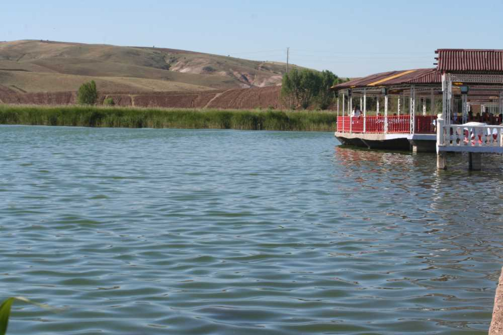

Hafik ilçe merkezinin kuzeybatısındaki bu gölün alanı yaklaşık 1 km² dir. Derinliği ortalama 6 m olan göl, dipten kaynayan sularla beslenmektedir. Fazla suları Kızılırmak'a akan göl, yörenin önemli mesirelerinden biridir. Büyük Göl'deki (Hafik Gölü) Pılır Höyük'te sondaj niteliğinde yapılan kazı sırasında, göl tabanına çakılmış ahşap direkler üzerinde göl evlerinin varlığı tespit edilmiş ve yerleşmenin Neolitik, Kalkolitik ve İlk Tunç Çağı'na dayandığı sonucuna varılmıştır.

Pılır Höyük daha önce İsviçre'deki Zürih Gölü ile Alp göllerinde birçok örneği keşfedilen ve Palafit adı verilen göl evleri türündeki yerleşim tarzının ülkemizdeki tek örneğidir.
Hafik, Sivas ilinin doğusunda, Kızılırmak havzasında, Sivas- Erzincan E-88 karayolu üzerinde kurulmuş olan ilçedir. Sivas' a 40 kilometre, Hafik İlçesi'ne 3 kilometre uzaklıktadır.